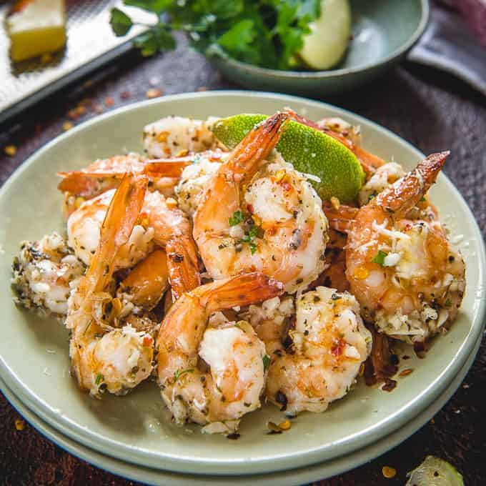

Garlic Parmesan Shrimp

Description
Delicious crispy shrimp coated in a bread crumb-Parmesan mixture.
Ingredients
- nonstick cooking spray
- 1 cup dry bread crumbs
- 1 cup shredded Parmesan cheese
- 2 tablespoons dried parsley
- 1 ½ teaspoons garlic powder
- 1 pound large shrimp, peeled and deveined
- 2 tablespoons butter, melted, or more to taste
Steps
- Preheat
- Seal and shake to mix ingredients together. Add shrimp and shake to coat.
- Lay shrimp flat in the prepared baking dish.
- Bake
- Enjoy